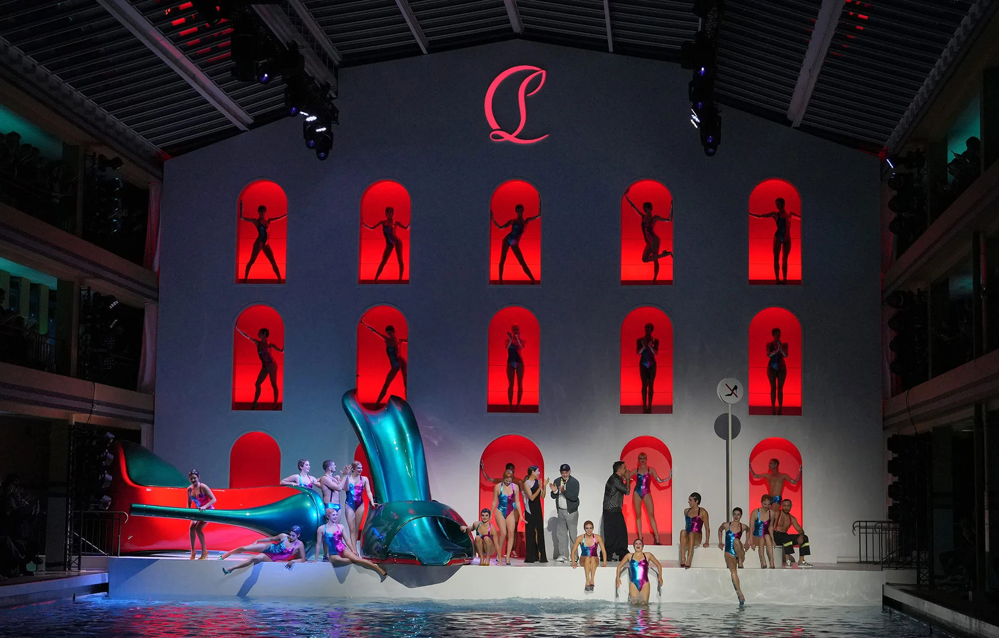
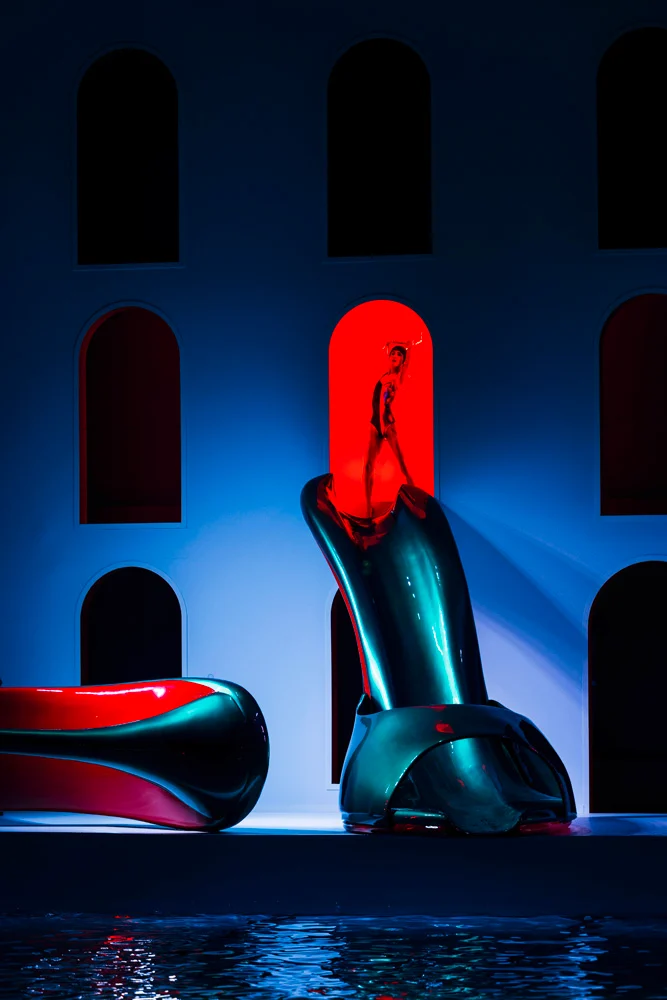

La Soirée du 27 septembre 2024 à la piscine Molitor
Le 27 septembre 2024, Christian Louboutin a organisé un événement spectaculaire dans la piscine iconique Molitor à Paris. Cet événement a combiné mode, luxe et performance dans un cadre inoubliable. Voici un détail sur cet événement unique.
Un show spectaculaire à la piscine Molitor
La piscine Molitor, un lieu emblématique de Paris, a été transformée en un véritable terrain de jeu pour la mode et la performance. Voici les points clés de cette transformation :
- Lieu iconique : La piscine Molitor, un bâtiment historique de Paris, est réputée pour sa piscine à ciel ouvert et son architecture Art Déco. En transformant cet espace en un lieu de mode, Louboutin a réussi à allier histoire et luxe moderne. La piscine elle-même a une aura de glamour, faisant d'elle l'endroit parfait pour un événement exclusif comme celui-ci.
- Environnement immersif : Louboutin n’a pas simplement présenté sa collection dans un espace ordinaire. Il a créé une atmosphère immersive où l’eau et les créations de mode se sont parfaitement intégrées. Des projections d’eau, des jeux de lumière et une scénographie soignée ont transformé la piscine en un véritable catwalk aquatique, captivant l’attention des invités et leur offrant une expérience sensorielle.
- Stratégie de segmentation : Cet événement visait un public cible très précis, composé de célébrités, de journalistes, d’influenceurs et de clients fidèles. Louboutin a bien compris que ses créations ne s’adressaient pas à tout le monde, mais à ceux qui apprécient le luxe, l’exclusivité et l’audace. En choisissant un lieu comme Molitor, il a renforcé cette segmentation en attirant des invités dont les goûts sont en phase avec les valeurs de la marque.

Performance musicale de LP
L'invitation de LP à cet événement a ajouté une touche musicale exceptionnelle, apportant une atmosphère encore plus festive et glamour à la soirée :
- Collaboration avec LP : Le choix de LP comme artiste pour cet événement démontre la volonté de Louboutin de fusionner mode et musique. LP, avec son style unique et sa popularité internationale, a parfaitement incarné l’esprit avant-gardiste de la marque. Son intervention a renforcé la dimension sensuelle et énergique de la soirée, faisant écho à l’essence même des créations Louboutin.
- Ciblage des invités : En choisissant LP, Louboutin a également renforcé son ciblage auprès d'un public jeune et dynamique, tout en attirant les amateurs de musique et les influenceurs. Cela lui a permis de toucher une audience encore plus large et de garantir que l'événement allait faire parler de lui dans les médias sociaux et au-delà.
- Une expérience sensorielle : La performance en live de LP n’a pas seulement ajouté de la musique à la soirée, mais a aussi accentué l’expérience visuelle et sonore des invités. La combinaison de la musique, de la mode et du lieu a permis de créer une atmosphère inoubliable, où chaque élément — visuel, auditif et émotionnel — se combinait pour renforcer le message de la marque.
Les créations de Louboutin : Un luxe audacieux
La soirée a permis à Louboutin de présenter sa nouvelle collection de manière spectaculaire. Voici comment les créations ont été mises en avant :
- Luxe et audace : Chaque modèle présenté à l'événement a été une œuvre de luxe, mettant en avant l’ADN de la marque : la semelle rouge. Ce choix iconique symbolise non seulement l’audace, mais aussi l'élégance et la sensualité. Les invités ont pu admirer les pièces les plus recherchées de la collection, dans un cadre aussi audacieux que les créations elles-mêmes.
- Positionnement de la marque : À travers cet événement, Louboutin a renforcé son positionnement comme une marque de luxe exclusive, destinée à une clientèle sophistiquée et à la recherche d’une expérience hors du commun. La présence de célébrités et l'utilisation d’un lieu prestigieux comme la piscine Molitor ont contribué à solidifier l'image haut de gamme de la marque.
- Gestion des gammes : En plus des célèbres escarpins à semelles rouges, la soirée a été l'occasion de dévoiler d'autres pièces de la collection, y compris des modèles innovants et avant-gardistes. Cette gestion diversifiée des gammes permet à la marque de s’adapter aux tendances tout en préservant son identité unique. L'événement a ainsi mis en lumière la capacité de Louboutin à naviguer entre tradition et innovation.
